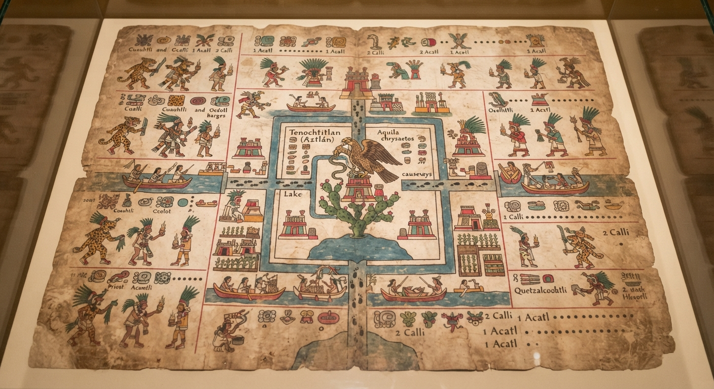
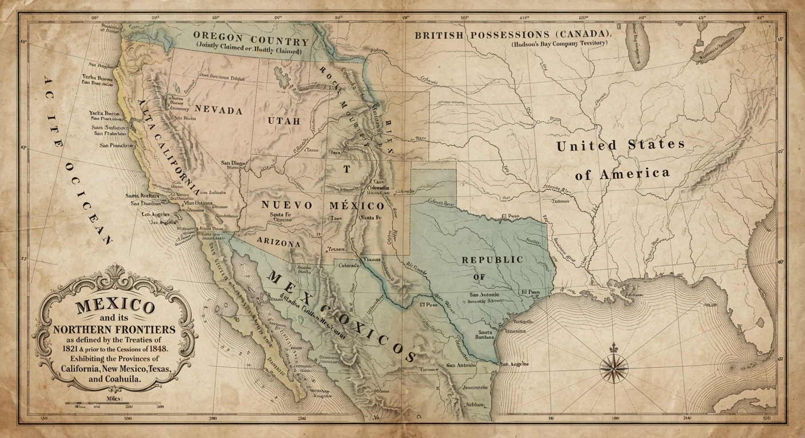
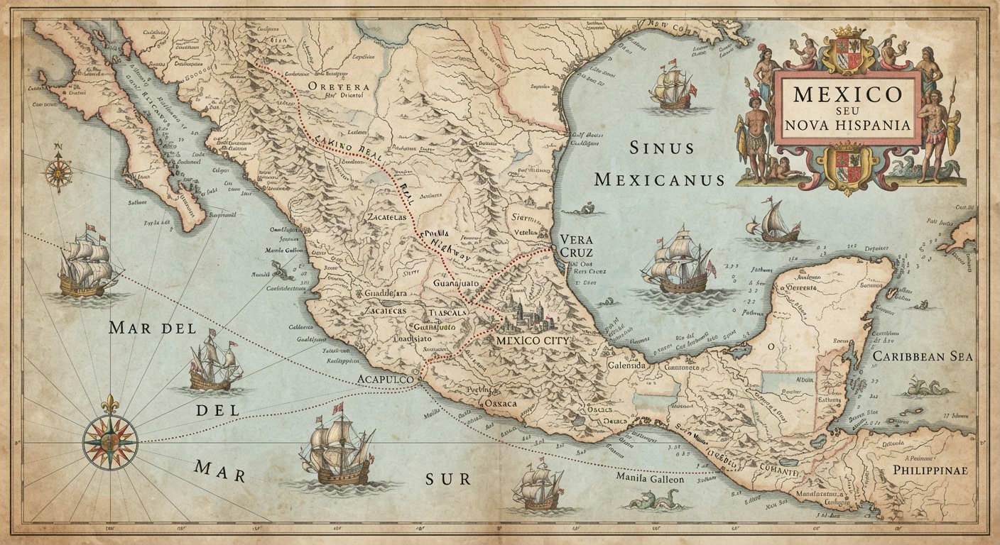
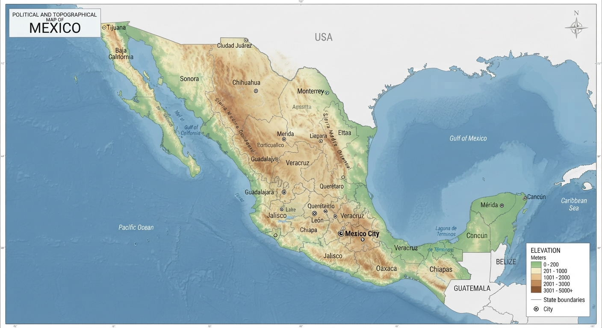

Continental Position and Area: Mexico is situated on the North American continent, occupying the southern portion of the landmass and serving as a geographic bridge connecting North and Central America. It is bounded by the United States to the north, the Gulf of Mexico and the Caribbean Sea to the east, the Pacific Ocean to the west and south, and Guatemala and Belize to the southeast.
Latitudinal Range: The country spans a latitudinal range from approximately 14°32' N at its southernmost border along the Suchiate River to 32°43' N at its northernmost boundary in Baja California.
Historical Existence and Timeline: As an independent sovereign nation, Mexico has existed from 1821 to the present, building upon thousands of years of pre-Columbian indigenous civilizations and the 300-year colonial period of the Viceroyalty of New Spain (1521–1821). Today, it operates as a federal constitutional republic supporting over 129 million citizens.

This indigenous pictorial document maps the foundational layout, canal systems, and territorial conquests of the Aztec capital of Tenochtitlan. It provides crucial insight into pre-Hispanic urban planning and spatial organization before European contact.

This historical map illustrates Mexico's expansive mid-19th-century borders prior to the Mexican-American War and the Treaty of Guadalupe Hidalgo. It outlines the vast northern territories that historically encompassed modern-day California, Nevada, Utah, Arizona, New Mexico, and parts of Colorado and Wyoming.

This archival route map highlights the interior royal roads (Camino Real) and critical transoceanic sea voyage routes established during the Spanish colonial era. It traces the historic flow of global commerce linking the Atlantic port of Veracruz to the Pacific port of Acapulco.

Utilizing a standard conformal Polyconic projection, this modern map details Mexico's contemporary political boundaries across 31 states and Mexico City. It illustrates major elevation profiles, mountain ranges, and national transportation networks to serve as an accurate baseline for spatial analysis.
Antonio García Cubas (1832–1912) was Mexico's preeminent 19th-century geographer, historian, and cartographer. Born in Mexico City, he overcame early childhood orphanhood to study geography at the Colegio de San Gregorio and the College of Engineers, graduating with honors as a professional geographer. He became a foundational member of the Mexican Society of Geography and Statistics and revolutionized Latin American mapmaking by introducing rigorous scientific surveying data and advanced chromolithography printing.